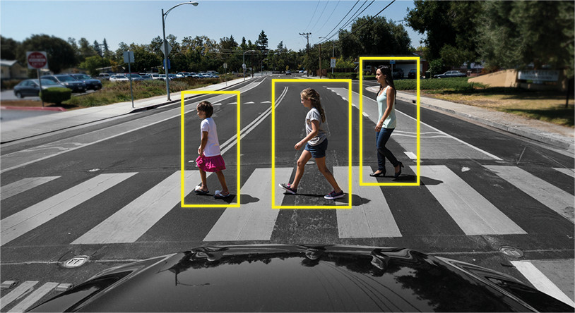

DIVING DEEP INTO THE WORLD OF CODING, STOCK MARKETS AND INKING ECCENTRIC THOUGHTS!
Hey there! I'm Smit Patel, a third year undergrad at IIT Indore pursuing a major in Electrical Engineering and a minor in Economics. I am greatly fascinated by and inquisitive about machine learning, natural language
processing and deep learning. Currently, I'm interning at Arcesium as a Software Development Intern. I am a stock market enthusiast and primarily look for IPO, mutual funds and do equity trading. I am the Founding Member of the Consulting & Finance Club and the Placement Manager at the Placement Cell at IIT Indore. Go through my profile to know more! :)
Interning as a Software Development Intern. Working on code migration, code optimization and overseeing end to end code deployment using Java and the Spring Framework.
IIT-B RESEARCH INTERNSHIP

Worked under Prof Asim Tewari to create a paraphase generator using Natural Language Processing. Incorporated tense rectifier along with synonym and antonym modifiers for generating robust paraphrases.
APPOINTY ANALYTICS AND MARKETING INTERNSHIP
Studied important business metrics and built enhanced product performance dashboards. Researched over fine-tuning of analytics and created custom coded filters to improve the accuracy of metrics and remove defective data.
Autocorrect using Modified N-grams

Developed an autocorrect model which determines the probability of a sentence by weighted interpolation of trigrams, bigrams and monograms trained using Adadelta optimizer in the domain of NLP.
BeatSync - Collaborating Music using Spotify

Developed a web app using NodeJS, ExpressJS and MongoDB for listening to music in sync. Employed Web Sockets for creating separate collaborative rooms and joining for multiple users.
Pedestrian Detector Using CNN

Developed an object detection model which constructs bounding boxes around pedestrians in images and videos. Trained a custom CNN model and achieved a validation accuracy of 96% for pedestrian recognition.